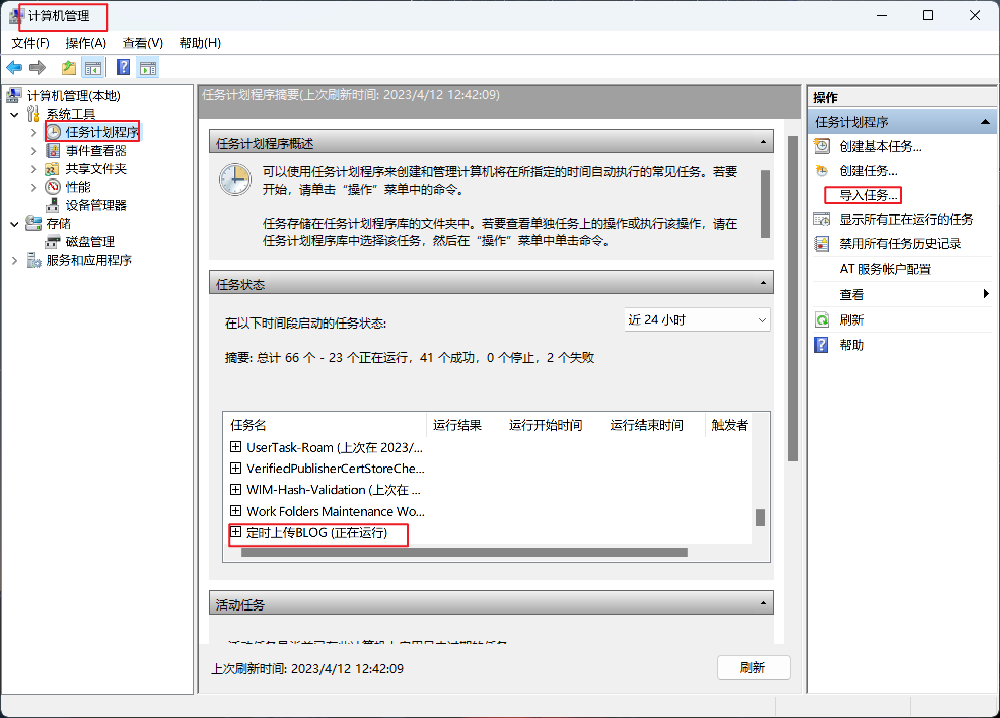
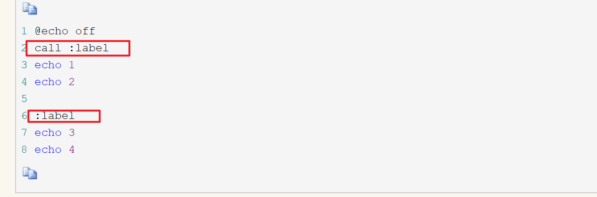
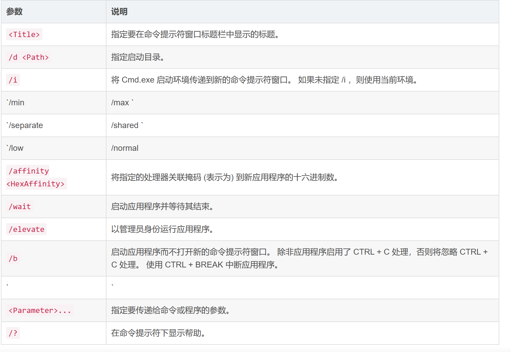
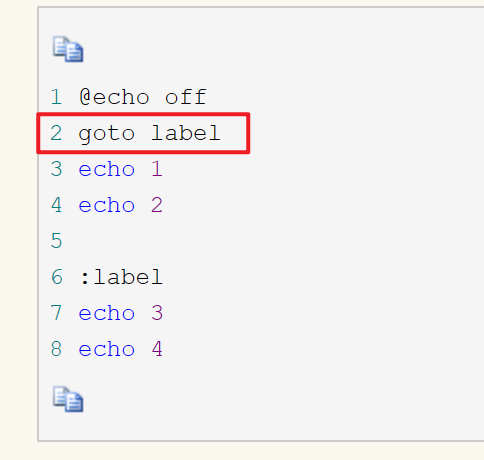
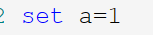

一、定时任务

二、bat脚本
1. 基础命令
-
echo
-
rem
-
pause
-
call
1.调用另一个批处理程序，并且不终止父批处理程序（如果不用call而直接调用别的批处理文件，那么执行完那个批处理文件后将无法返回当前文件并执行当前文件的后续命令）。
2.调用标签

-
start
启动单独的命令提示符窗口以运行指定的程序或命令
start [<Title>] [/d <Path>] [/i] [{/min | /max}] [{/separate | /shared}] [{/low | /normal | /high | /realtime | /abovenormal | belownormal}] [/affinity <HexAffinity>] [/wait] [/elevate] [/b] [<Command> [<Parameter>... ] | <Program> [<Parameter>... ]]
call与start的区别
- call调用不仅可以把参数或变量传给被调用的批处理，而且被调用的批处理也可以设置参数或变量以便回传，而start只能把参数或变量传给被调用的批处理，却不能回传参数或变量，这一点实际上是第二点的延伸
-
goto
call命令的应用示例2中，我们看到了call命令对跳转标签的调用，注意调用时必须在标签名前加冒号，而goto是直接跟标签名

-
set

2.批处理符号简介
-
回显屏蔽 @
-
重定向1 >与»
-
重定向2 <
-
管道符号 |
-
转义符 ^
-
逻辑命令符包括：
&、&&、|| -
批处理参数%[1-9]
%[1-9]表示参数，参数是指在运行批处理文件时在文件名后加的以空格（或者Tab）分隔的字符串。变量可以从%0到%9，%0表示批处理命令本身，其它参数字符串用%1到%9顺序表示。
3.逻辑判断
3.1 if语句
形式
IF [NOT] ERRORLEVEL number command
IF [NOT] string1==string2 command
IF [NOT] EXIST filename command
- 比较字符串&&比较数字
if [not] 信息比较表达式 (
命令行1
) else (
命令行2
)
案例
@echo off
if abc==ABC (
echo abc euqal ABC
) else (
echo abc not euqal ABC
)
pause>nul
- 检测文件(夹)是否存在
if [not] exist filepath (
命令行1
) else (
命令行2
)
其中“exist”是关键字表示“存在”，“filepath”表示要判断的文件路径，如果检查到指定的文件存在则执行对应的命令块，“not”表示相反操作
@echo off
if exist C:\a.txt (
echo file is find!
del C:\a.txt
) else (
echo file is not found!
)
pause>nul
-
检测变量是否被定义
if defined 变量名 ( 命令行1 ) else ( 命令行2 ) -
判断返回值(ERRORLEVEL)
表达式
if [not] ERRORLEVEL <number> <command> [else <expression>]
前一个指令的返回值判断， 大于等于则为true。
错误级别“errorlevel”是MS-DOS的内置环境变量，在上面已经介绍过，主要用于保存上一条命令语句是否执行成功，成功则返回0，失败或错误则返回相对应的错误级别码。然而“errorlevel”是内置环境变量，所以可以使用下面的方式判断：
案列：
if %errorlevel%==0 (
echo success!
) else (
echo failed!
)
然而“if”语句提供了一种特殊的错误级别判断方式，如下：
if [not] errorlevel number (
命令行1
) else (
命令行2
)
errorle
@ECHO OFF
XCOPY C:\AUTOEXEC.BAT D:\
IF ERRORLEVEL 0 ECHO 成功拷贝文件
IF ERRORLEVEL 1 ECHO 未找到拷贝文件
IF ERRORLEVEL 2 ECHO 用户通过ctrl-c中止拷贝操作
IF ERRORLEVEL 3 ECHO 预置错误阻止文件拷贝操作
IF ERRORLEVEL 4 ECHO 拷贝过程中写盘错误
无论拷贝是否成功，后面的：
未找到拷贝文件
用户通过ctrl-c中止拷贝操作
预置错误阻止文件拷贝操作
拷贝过程中写盘错误
都将显示出来。
3.2 for语法
for %%a in (A B C) do echo %%a
案例：
for %%c in (*.bat *.txt) do type %%c
3.3 choice语句
choice 使用此命令可以让用户输入一个字符（用于选择），从而根据用户的选择返回不同的errorlevel，然后于if errorlevel配合，根据用户的选择运行不同的命令。
注意：choice命令为DOS或者Windows系统提供的外部命令，不同版本的choice命令语法会稍有不同，请用choice /?查看用法。
choice的命令语法（该语法为Windows 2003中choice命令的语法，其它版本的choice的命令语法与此大同小异）:
CHOICE [/C choices] [/N] [/CS] [/T timeout /D choice] [/M text]
描述:该工具允许用户从选择列表选择一个项目并返回所选项目的索引。
参数列表:
/C choices 指定要创建的选项列表。默认列表是 "YN"。
/N 在提示符中隐藏选项列表。提示前面的消息得到显示，
选项依旧处于启用状态。
/CS 允许选择分大小写的选项。在默认情况下，这个工具
是不分大小写的。
/T timeout 做出默认选择之前，暂停的秒数。可接受的值是从 0
到 9999。如果指定了 0，就不会有暂停，默认选项
会得到选择。
/D choice 在 nnnn 秒之后指定默认选项。字符必须在用 /C 选
项指定的一组选择中; 同时，必须用 /T 指定 nnnn。
/M text 指定提示之前要显示的消息。如果没有指定，工具只
显示提示。
/? 显示帮助消息。
注意:
ERRORLEVEL 环境变量被设置为从选择集选择的键索引。列出的第一个选
择返回 1，第二个选择返回 2，等等。如果用户按的键不是有效的选择，
该工具会发出警告响声。如果该工具检测到错误状态，它会返回 255 的
ERRORLEVEL 值。如果用户按 Ctrl+Break 或 Ctrl+C 键，该工具会返回 0
的 ERRORLEVEL 值。在一个批程序中使用 ERRORLEVEL 参数时，将参数降
序排列。
示例:
CHOICE /?
CHOICE /C YNC /M "确认请按 Y，否请按 N，或者取消请按 C。"
CHOICE /T 10 /C ync /CS /D y
CHOICE /C ab /M "选项 1 请选择 a，选项 2 请选择 b。"
CHOICE /C ab /N /M "选项 1 请选择 a，选项 2 请选择 b。"
案例：
@echo off
choice /C dme /M "defrag,mem,end"
if errorlevel 1 goto defrag
if errorlevel 2 goto mem
if errorlevel 3 goto end
:defrag
c:\dos\defrag
goto end
:mem
mem
goto end
:end
echo good bye
按下d，%errorlevel%=1
按下m，%errorlevel%=2
按下e，%errorlevel%=3
3.4 setlocal与endlocal命令
setlocal和endlocal命令执行结果：让中间的程序对于系统变量的改变只在程序内起作用，不会影响整个系统级别。
@echo off
setlocal
path=d:\
echo 局部环境变量path值
set path
endlocal
echo 系统环境变量path的值
set path
在第二行setlocal之后，第三行对于变量path进行了赋值，第四行就是显示一下该值。在第六行endlocal后，重新显示一下系统变量path（第七行），会发现仍然是程序运行之前的path值，没有被程序改变。
三、bat成品案例
1.通过批处理文件（.bat）一键修改电脑ip地址
@echo off
echo.
echo 修改ip地址，1为自动获取ip地址，2为修改家里ip地址,3 为公司IP
echo.set sel=
set/p sel=请选择修改方式：
if "%sel%"=="1" goto auto
if "%sel%"=="2" goto home
if "%sel%"=="3" goto company
echo 您没有选择修改方式。
goto end
:auto
netsh interface ip set address name="本地连接" source=dhcp
netsh interface ip delete dns "本地连接" all
ipconfig /flushdns
ipconfig /all
goto end
:home
echo 正在更改IP地址，请稍等......
netsh interface ip set address name="本地连接" source=static addr=192.168.1.80 mask=255.255.255.0 gateway=192.168.1.1 gwmetric=1
netsh interface ip set dns name="本地连接" source=static addr=202.102.192.68
netsh interface ip add dns name="本地连接" addr=202.102.199.68 index=2
ipconfig /flushdns
ipconfig /all
echo 更改IP地址完成！
goto end
:company
echo 正在更改IP地址，请稍等......
netsh interface ip set address name="本地连接" source=static addr=10.85.10.80 mask=255.255.255.0 gateway=10.85.10.253 gwmetric=1
netsh interface ip set dns name="本地连接" source=static addr=218.104.78.2
netsh interface ip add dns name="本地连接" addr=10.85.7.100 index=2
ipconfig /flushdns
ipconfig /all
goto end
:end
pause